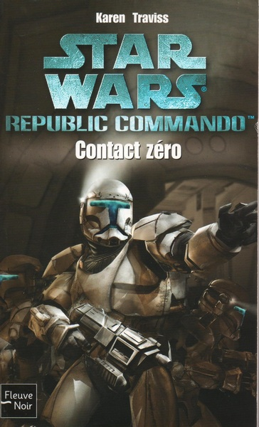
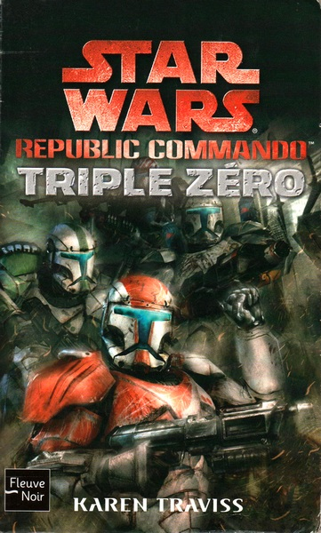
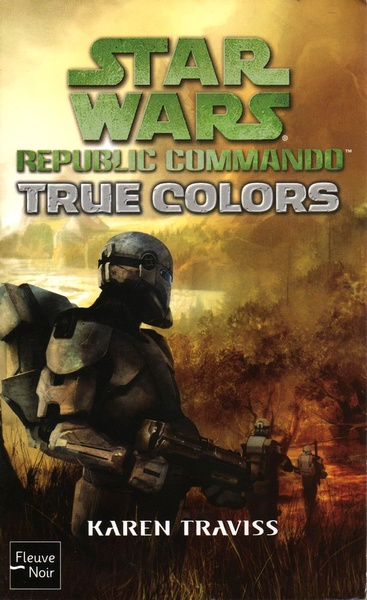
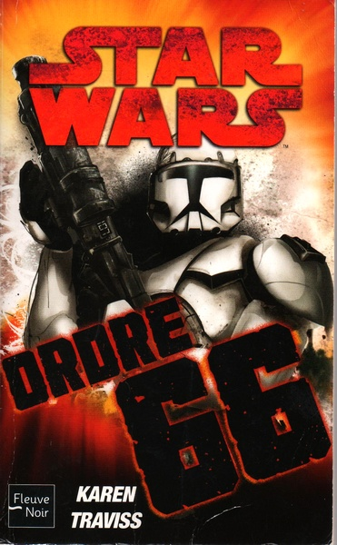

Histoire
L'Escouade Omega est une unité de commandos clones d'élite de la Grande Armée de la République, née d'un assemblage inhabituel : chacun de ses quatre membres a déjà perdu sa première escouade à la bataille de Géonosis. Darman (RC-1136) vient de l'escouade Theta et se spécialise en explosifs. Niner (RC-1309), ancien sergent de l'escouade Lambda, prend le commandement d'Omega. Fi (RC-8015), rescapé de l'escouade Teroch, devient le secouriste du groupe. Atin (RC-3222), seul membre à avoir perdu deux escouades (la première, l'escouade Prudii, décimée à Géonosis même), se spécialise en technologies et armements.

Deux instructeurs, un seul esprit de corps
Darman, Niner et Fi ont tous trois été formés par le sergent mandalorien Kal Skirata, qu'ils admirent profondément et évoquent sans cesse entre eux. Atin, lui, a été instruit par Walon Vau, un homme dur et violent qui l'a marqué de nombreuses cicatrices ; contrairement au respect traditionnel qu'un commando voue à son instructeur, Atin nourrit envers Vau une haine tenace. Meurtri physiquement et psychologiquement par la perte de deux escouades, Atin peine à trouver sa place au sein d'Omega, davantage par isolement volontaire que par rejet des autres. Le temps et les missions partagées finissent par souder les quatre clones en véritables frères d'armes.
Bien plus qu'un instructeur
Contrairement à la plupart des sergents formateurs, qui ne voient dans leurs élèves que du matériel militaire, Kal Skirata traite ses commandos comme ses propres fils. Il leur enseigne le mando'a, leur transmet la culture et la fierté mandaloriennes, et refuse de les considérer comme de simples numéros. Ce lien dépasse Omega : Skirata prend aussi sous son aile les soldats ARC Null, dont Ordo et Mereel, des commandos au conditionnement psychologique instable que les Kaminoans jugeaient à peine utilisables, et qu'il sauve littéralement de la mise à l'écart.
Autour de lui se forme peu à peu un « clan » au sens mandalorien du terme : une famille choisie plutôt que biologique, qui s'élargit au fil des missions à des alliés civils comme Besany Wennen ou Laseema, puis à Corr et au petit Kad. Skirata consacre aussi une part croissante de son temps à une obsession personnelle : trouver un moyen de ralentir le vieillissement accéléré des clones, pour que ses « fils » aient une chance de vivre au-delà de la guerre.
Première mission : le laboratoire de la CSI
La toute première mission d'Omega consiste à détruire un laboratoire de la Confédération des Systèmes Indépendants sur Qiilura, où la scientifique Ovolot Qail Uthan met au point un nanovirus mortel pour les clones. Objectif secondaire : capturer Uthan elle-même.
L'extraction tourne mal : leur vaisseau s'écrase, et si Niner, Fi et Atin sautent à temps, Darman saute trop tard et se retrouve isolé, livré à lui-même avec un lourd matériel à traîner. Niner refuse d'abandonner un frère qu'il sait vivant et refait seul le chemin des points de rendez-vous. La Gurlanin Jinart, chargée d'épauler les clones sur le terrain, finit par arranger leurs retrouvailles. L'escouade découvre aussi son commandant : une jeune Padawan, Etain Tur-Mukan, loin d'être une Jedi brillante mais dont le dévouement sincère envers les clones lui vaut le respect de toute l'escouade, et le cœur de Darman.
La mission s'achève en succès : laboratoire et nanovirus détruits, Uthan capturée, et Ghez Hokan, le Mandalorien chargé de la sécurité séparatiste, tué. Seul Atin est blessé, par un tir de fusil verpine ; Fi ramène l'armure d'Hokan comme trophée.
Armures noires et nouvelle fraternité
Omega reçoit ensuite une nouvelle génération d'armures Katarn peintes en noir pour améliorer sa furtivité. Ironie du sort, leur premier déploiement a lieu sur le monde enneigé de Fest, où le camouflage sombre tranche sur la neige. Fi se lie d'amitié avec le soldat ARC Ordo, qui admire le dévouement du commando envers ses frères d'armes.
Mission d'abordage
Omega est chargée d'intercepter dans l'espace des suspects soupçonnés de transporter des explosifs pour une cellule terroriste séparatiste basée sur Coruscant. L'opération dérape et l'escouade doit son salut à l'intervention de renfort de l'Escouade Delta.
Opération secrète : Delta et Omega réunies
Grâce à Kal Skirata, une opération secrète est montée sur Coruscant même pour démanteler le réseau terroriste. Delta, Omega, Skirata, Etain Tur-Mukan (retrouvée avec joie) et le Padawan Bardan Jusik de la Brigade des Opérations Spéciales traquent ensemble la cellule. Durant cette mission, Darman et Etain se rapprochent à nouveau, cette fois sans retenue ; Atin se lie à une serveuse Twi'lek nommée Laseema, tandis qu'Ordo rencontre Besany Wennen, agent du Trésor infiltrée au Centre de Logistique où se cache la taupe terroriste.
L'ambiance au quartier général, la cantina de la Hutte de Qibbu, reste tendue : la présence de Walon Vau, également instructeur de Delta, ravive la haine d'Atin, et la rivalité latente entre Omega et Delta n'aide pas. Le réseau terroriste est finalement démantelé avec succès.
Le règlement de comptes d'Atin
Sa parole donnée, Atin attaque Vau au corps à corps, armé d'une simple vibrolame. Le combat est violent ; Atin prend le dessus et menace de tuer le vieux Mandalorien. Bardan Jusik intervient à temps pour épargner Vau. Frustré de ne pas être allé au bout, Atin trouve malgré tout un apaisement : il a prouvé qu'il valait mieux que son ancien instructeur, et met fin à sa vendetta.
Le secret d'Etain
Second choc de cette mission : Etain, tombée enceinte de Darman sans le lui dire, espérait lui offrir une vie de famille normale. Kal Skirata, furieux en l'apprenant, sait mieux que quiconque que Darman est né pour se battre et ne pourra jamais connaître autre chose. Etain, qui ne s'est jamais sentie proche de l'Ordre Jedi, y voit aussi une façon de s'en faire exclure. Avec Skirata, ils décident de ne rien dire à Darman : l'enfant sera élevé par Skirata selon les traditions mandaloriennes dès sa naissance.
Le choix de Darman
Une nouvelle fois, Darman a le choix de quitter ses frères pour rester auprès d'Etain ; Skirata lui assure qu'il ne lui en voudra jamais. Mais Skirata avait raison depuis le début : Darman est avant tout un soldat de la République. Il refuse une fois de plus de quitter l'escouade, une décision qui le fait souffrir mais qu'il sait juste au fond de lui. Omega repart vers de nouveaux assignements, loin d'Etain et de Kal Skirata, sans pour autant rompre le contact.
Le cinquième homme
Sur Coruscant, un simple fantassin nommé Corr, seul survivant de sa compagnie et amputé des deux mains après avoir désamorcé un engin explosif, croise la route d'Omega par le biais d'Ordo puis de Kal Skirata. Ce dernier refuse de le laisser croupir derrière un bureau et lui offre un véritable entraînement de commando. Corr s'intègre peu à peu à l'escouade, endosse l'armure de rechange de Fi lorsque celui-ci est blessé, puis devient un membre à part entière d'Omega sous le matricule RC-5108/8843, cinquième frère d'armes aux côtés de Niner, Darman, Fi et Atin.
La désertion
À la chute de la République, lorsque l'Ordre 66 est lancé contre les Jedi, l'Escouade Omega refuse de l'exécuter. Aux côtés des soldats ARC Null, d'Atin et de Corr, les commandos désertent plutôt que de trahir leurs frères d'armes Jedi, et disparaissent de la liste des effectifs réguliers de la Grande Armée.
Chronique basée sur les romans Republic Commando de Karen Traviss (Hard Contact, Triple Zero, True Colors, Order 66) et la fiche Star Wars HoloNet de l'escouade.
Bibliographie
Les romans de Karen Traviss qui racontent l'histoire de l'Escouade Omega.

Premier tome du cycle : la toute première mission d'Omega sur Qiilura, la rencontre avec la Padawan Etain Tur-Mukan et l'affrontement contre Ghez Hokan.
Lire ↗
Suite directe d'Hard Contact : les escouades Omega et Delta sont envoyées en mission secrète sur Coruscant pour démanteler une cellule terroriste séparatiste.
Lire ↗
Alors que la guerre s'éternise, les liens fraternels de l'escouade et leur loyauté envers la République sont mis à rude épreuve.
Lire ↗
À l'approche de la chute de la République, l'escouade doit affronter l'exécution de l'Ordre 66 et choisir entre son devoir et sa loyauté envers ses frères Jedi.
Lire ↗Couvertures et romans © Karen Traviss / Del Rey, présentés à titre documentaire uniquement.